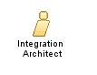

| Role: Integration Architect
(045012)
|
|
 |
| This role is focused on the design of solutions which enable existing and new application components, existing and new applications, packaged software offerings and systems to work together within an enterprise or among enterprises. These solutions may use different technologies, vendors, platforms, and styles of computing. |
| Role Sets: Architect, Software |
|
Relationships
 |
| Additionally Performs |
|
Main Description
| The primary focus of an Integration Architect is to develop solutions that fully integrate and collaborate with existing IT
systems in order to perform an automated business function (usually known as “Enterprise Application Integration” or more
recently as “Business Integration”). New Services Oriented Architectures (SOA), the related standards and
technologies are an important area for this role. All levels of integration are within the scope of the Integration
Architect (User Access, Application, Extended Enterprise, Process, and Information Integration). Integration Architect
requires a holistic view of enterprise solutions, including a sound appreciation of operational costs, security,
performance engineering, application development and systems management. |
Staffing
| Skills | The appropriate skills and knowledge for this role include:
-
Knowledge of the system or part of the system to be integrated. In particular, the integrator needs to know the
interdependencies between Implementation Elements and the inter-dependencies between Implementation Subsystems, and
how their development and dependencies are expected to change over time.
-
The ability to design component integration architectures for complex solutions which solve the customer
requirements.
-
Familiarity with integration tools
Integrators need to have good coordination skills, as he/she often works with multiple developers to ensure a
sucessful integration. |
© Copyright IBM Corp. 1987, 2012 All Rights Reserved
Property of IBM
These materials are intended only for use as part of an IBM engagement |
|